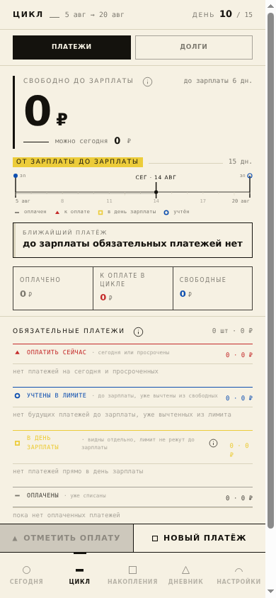
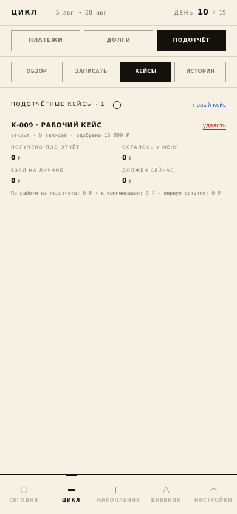

Сегодня
Решение на текущий день
Свои деньги, свободно до зарплаты, дневной ориентир и ближайший обязательный платёж.
Финансовый диспетчер зарплатного цикла
Сколько можно сегодня?
Не просто записывать прошлые расходы, а каждый день видеть сумму, которую можно потратить без ущерба обязательным платежам, накоплениям и планам до следующей зарплаты.

Предыстория
Я начинал с обычной задачи: регулярно откладывать деньги и не забирать их обратно. Цель поставить легко. Гораздо труднее каждый день понимать, сколько действительно можно потратить.
Сегодня потратил чуть больше и решил, что завтра наверстаю.
Обязательные платежи остались впереди, но в текущем остатке они не видны.
Деньги вроде есть, а к концу цикла приходится брать их из накоплений.
Мне нужен был не ещё один список трат. Нужен был ответ перед глазами: сколько можно сегодня, чтобы до зарплаты всё сошлось.
Так появился МФМ. Он смотрит не на календарный месяц, а на живой зарплатный цикл: от полученной зарплаты до следующей выплаты.
Главный принцип
Это не разрешение тратить всю показанную сумму. Это честная граница, внутри которой сегодняшнее решение не ломает уже известные планы.
Что делает МФМ
Сегодня
Свои деньги, свободно до зарплаты, дневной ориентир и ближайший обязательный платёж.
Цикл
Обязательства не прячутся внутри общего остатка и не становятся неожиданностью в конце месяца.
Накопления
Видно не только желаемую сумму, но и то, выдерживает ли фактический темп выбранный срок.
Дневник
Доходы, расходы, долговые движения, накопления и сверки остаются разными событиями.
Настройки
Даты выплат, Подушка, обязательства и рубрики задаются под собственный ритм, а не под усреднённую модель.
Почему рабочие деньги внутри того же приложения
Рабочие и личные деньги нередко физически лежат на одной карте или в одной наличной кассе. Если учитывать их в разных местах, теряется главный факт: сколько всего денег сейчас у человека и какая часть из них ему не принадлежит.
Поэтому рабочий контур не является второй бухгалтерией рядом с личным приложением. Это дополнительный слой над той же реальностью денег на руках, который не даёт чужим средствам превратиться в личный бюджет.
Два режима
Основа приложения одинакова. Разница только в дополнительном учёте подотчётных средств и связанных с ними кейсов.
Личный режим
Режим с рабочими деньгами
Техническое примечание: действующие серверные экземпляры имеют внутренние кодовые названия Wikmiks и ProKopa. Это адреса окружений, а не названия продукта и не термины, которые пользователь обязан запоминать.
Интерфейс


Следующий горизонт
Следующий вариант задуман для компаний, где несколько руководителей или ответственных сотрудников ведут свои рабочие бюджеты. Каждый сохраняет привычный личный интерфейс, а финансовый блок получает общую картину без ручного сбора разрозненных отчётов.
вносят выдачи, траты, возвраты и подтверждения по своим бюджетам
собирают движение денег по задачам, подразделениям и ответственным
видит актуальное состояние, отклонения и неподтверждённые движения
получают согласованные данные в Google Sheets или другой рабочий формат
Сейчас это направление разработки, а не обещание готовой корпоративной системы. Состав ролей, права доступа, интеграции и отчёты должны проектироваться под конкретный процесс финансового подразделения.
Пилотный доступ
Можно запросить личный режим, режим с рабочими деньгами или обсудить адаптацию под корпоративный процесс и фирменный стиль.
Запрос в GitHub публичный. Не указывайте пароли, контакты, реквизиты и реальные финансовые данные. Приглашение передаётся только по закрытому каналу.